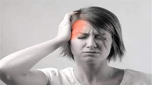
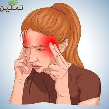

اقوي عشر ادويه
معلومات جانبيه عن الادويه
!!!.معلومه هامه هناك اعراض جانبيه لهذه العلاجات مثل نوبة قلبية أو سكتة دماغية
!!!.معلومه هامه هناك اعراض جانبيه لهذه العلاجات مثل نوبة قلبية أو سكتة دماغية
!!!.معلومه هامه هناك اعراض جانبيه لهذه العلاجات مثل نوبة قلبية أو سكتة دماغية
!!!.معلومه هامه هناك اعراض جانبيه لهذه العلاجات مثل نوبة قلبية أو سكتة دماغية
!!!.معلومه هامه هناك اعراض جانبيه لهذه العلاجات مثل نوبة قلبية أو سكتة دماغية
!!!.معلومه هامه هناك اعراض جانبيه لهذه العلاجات مثل نوبة قلبية أو سكتة دماغية
!!!.معلومه هامه هناك اعراض جانبيه لهذه العلاجات مثل نوبة قلبية أو سكتة دماغية
!!!.معلومه هامه هناك اعراض جانبيه لهذه العلاجات مثل نوبة قلبية أو سكتة دماغية
!!!.معلومه هامه هناك اعراض جانبيه لهذه العلاجات مثل نوبة قلبية أو سكتة دماغية
!!!.معلومه هامه هناك اعراض جانبيه لهذه العلاجات مثل نوبة قلبية أو سكتة دماغية


العلامات والأعراض
المرحلة يظهر الصداع النصفي عادة على شكل صداع شديد متكرر ذاتي التحديد مترافق بأعراض الجهاز العصبي الذاتي. ويعاني حوالي 15-30٪ من المصابين بالصداع النصفي من صداع نصفي ترافقه الأورة وكثيرًا ما يعاني المصابون بالصداع النصفي المترافق بالأورة أيضا من الصداع النصفي غير المترافق بالأورة. وتختلف شدة الألم ومدة الصداع وتواتر النوبات. ويطلق على نوبة الصداع النصفي التي تستمر لفترة أطول من 72 ساعة الحالة الشقيقية. هناك أربعة مراحل ممكنة لنوبة الصداع النصفي، ولكن قد لا تحدث كل هذه المراحل بالضرورة: البادرة، التي تحدث قبل الصداع بساعات أو أيام. الأورة، التي تسبق الصداع مباشرة. مرحلة الألم، والتي تعرف أيضا باسم مرحلة الصداع. المرحلة الخاتمة، وهي التأثيرات التي يشعر بها المصاب عقب انتهاء نوبة الصداع النصفي
هل تعاني من صداع نصفي؟
 ان كنت تعاني من صداع نصفي سوف نقدم اليوم اقوي 10 ادويه بدون ترتيب ضد الصداع النصفي وقد جئنا بهذه المعلومات من هذه المواقع skynewsarabia| mayoclinic|wikipedia
1-amigraine
2-favadol
3-cafergot 3
4-panadol actifast
5-panadol extra
6-panadol Migraine
7-slopadol
8-relpax
9-fevadol plus
10-dolerain